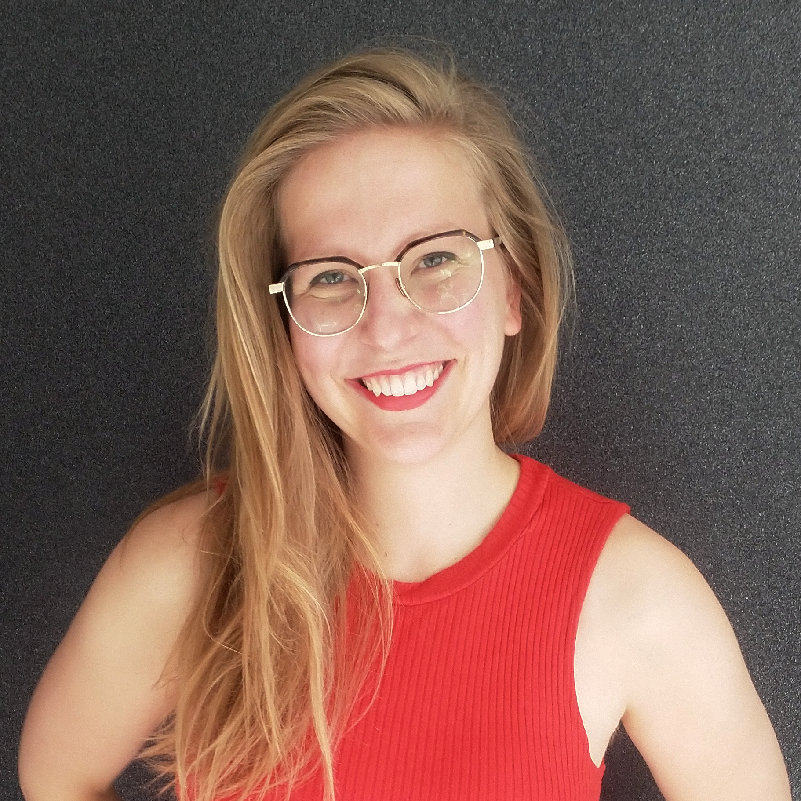

| 21/11/2025 | Exhibition | "Rave Patterns" with Agnetha Jaunich, Tresor x arc.gallery_export | Berlin, DE |
| 09/2025-10/2025 | Workshop | Open Design Course: Textiles, by Mesh vzw together with KASK | Kortrijk, BE |
| 23/08-06/09/2025 | Performance & Exhibition | "Rave Patterns" with Agnetha Jaunich, Arc Gallery Tresor.West | Dortmund, DE |
| 29/05-01/06/2025 | Performance Pitch | "Repatterning" with Agnetha Jaunich, Dance All in Sharing Across Borders Festival, ehrenfeld studios | Cologne, DE |
| 19/05-23/05/2025 | Workshop | "Soft Circuits", Fabricademy Bootcamp, Green Fabric | Brussels, BE |
| 08/05/2025 | Exhibition | "Breaking Code" with Superview TV, Kunstennacht Hasselt | Hasselt, BE |
| 02/2025-11/2025 | Residency | "Biometrica", with Ohme, Pilar & FARI | Brussels, BE |
| 31/01/2025 | Exhibition | "Breaking Code", Bring your own Beamer Antwerp | Antwerp, BE |
| 06/12-08/12/2024 | Worksession Participant & Panel Talk | "E-Textiles in Healthcare", Future of Living Conference - Rethread the Needle, Green Fabric & Imal | Brussels, BE |
| 16/10/2024 | Talk | "Technologies for Connection vs Surveillance" together with Jan Christian Schulz, Bratislava Design Week | Bratislava, SK |
| 05/07-07/07/2024 | Exhibition | "You+", DIA Hochschule Wismar | Wismar, DE |
| 06/07/2024 | Workshop | "Off Track", DIA Hochschule Wismar | Wismar, DE |
| 22/05-24/05/2024 | Audiowalk & Keynote | "On the Exactitude of Maps", CPDP.ai 2024 | Brussels, BE |
| 04/2024 | Residency | "A dancer and an AI-Model walk into a bar" with Agnetha Jaunich, Tiny Residency, Studio 7 | Schwerte, DE |
| 06/09-10/09/2023 | Exhibition | CODE 2023, Ars Electronica | Linz, AU |
| 07/2023-06/2024 | Fellowship | Caspar David Friedrich Grant, Ministry for Science and Culture of Mecklenburg Vorpommern | Wismar, DE |
| 19/06-21/06/2023 | Exhibition | CODE 2023, MozFest 2023-House | Amsterdam, NL |
| 25/05/2023 | Talk | CODE2023, CPDP 2023 | Brussels, BE |
| 01/2023-06/2023 | Residency | CODE2023, Impakt(NL), Werktank (BE), Privacy Salon (BE) and Transmediale(DE) | Brussels, BE |
| 29/03-01/04/2023 | Workshop | "Lab for Sonic Speculation" together with Jan Christian Schulz By Design or By Disaster Conference 2023, Free University of Bolzano | Bolzano, IT |
| 22/10-30/10/2022 | Exhibition | Graduation Show Design Academy Eindhoven, DDW22 | Eindhoven, NL |
| 22/10-30/10/2022 | Exhibition | Material Profanation, DDW22 | Eindhoven, NL |
| 28/10/2022 | Panel Talk | „The Cat in the Black Box, Perspectives on Data and Design“, Arena Programme, DDW22 | Eindhoven, NL |
| 01/07-10/07/2022 | Exhibition | Zukunftsstoffe, Design Zentrum Hamburg | Hamburg, DE |
| 15/10-24/10/2021 | Exhibition | Zero Hunger - Zero Power, DDW21 | Eindhoven, NL |
| 28/09/2021 | Award | German Packaging Award together with Jacobo Cuesta Wolf | Wismar, DE |
| 10/07/2021 | Panel Talk | "Critical Design" Hochschule Wismar | Wismar, DE |
| 07/2021 | Exhibition | "Coding, Feminism & Textiles", Konfekt | Wismar, DE |